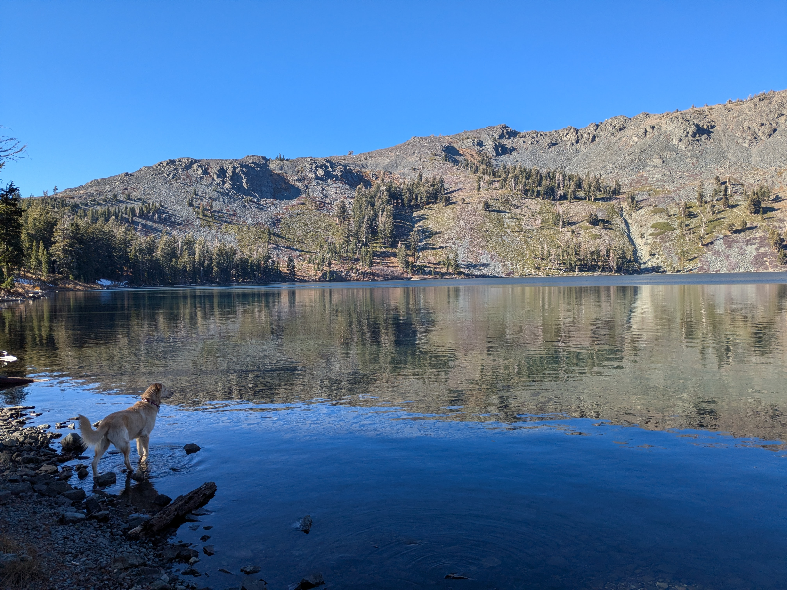
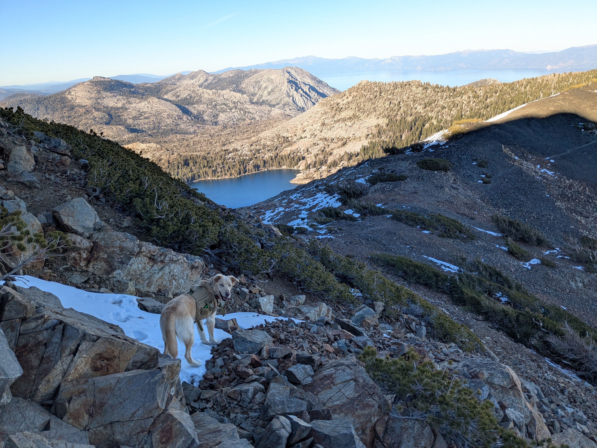
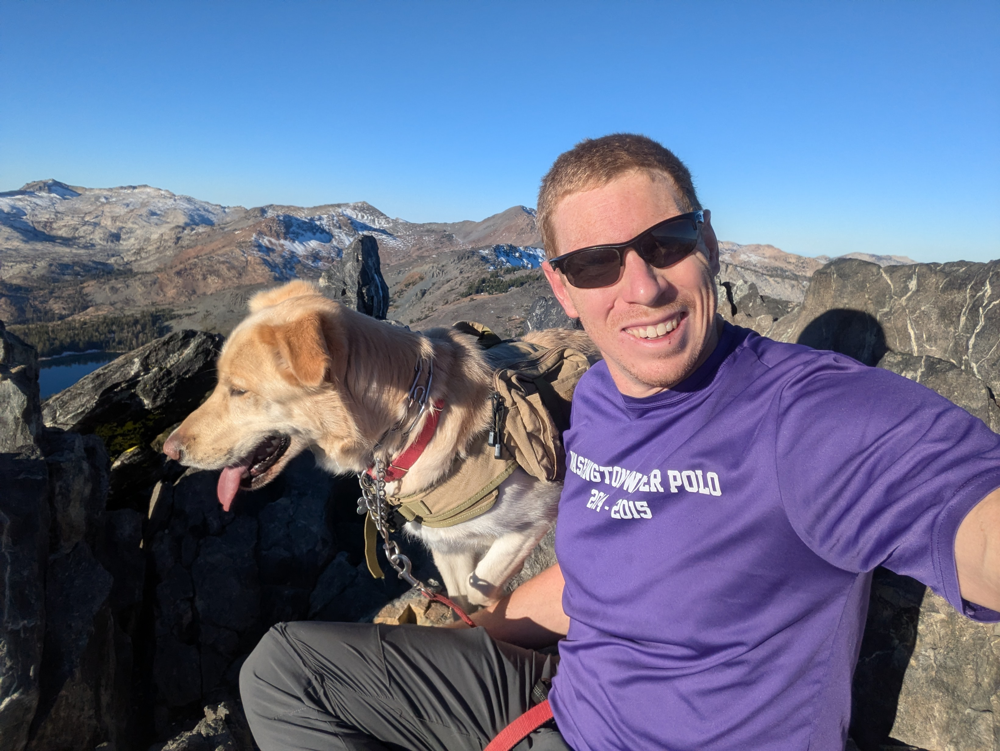
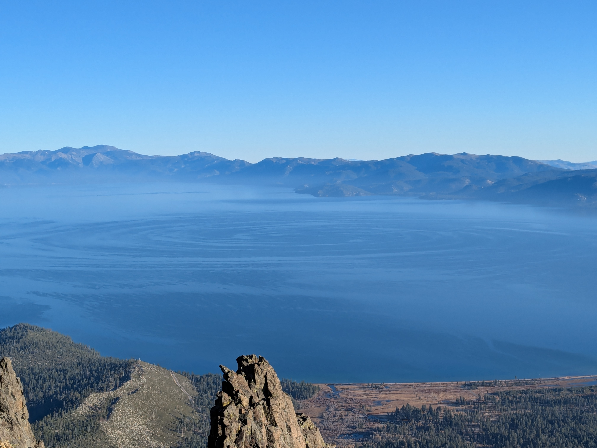
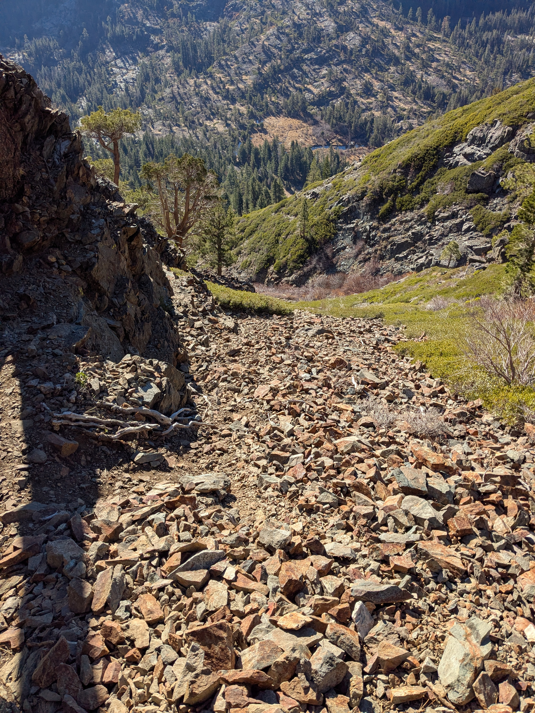
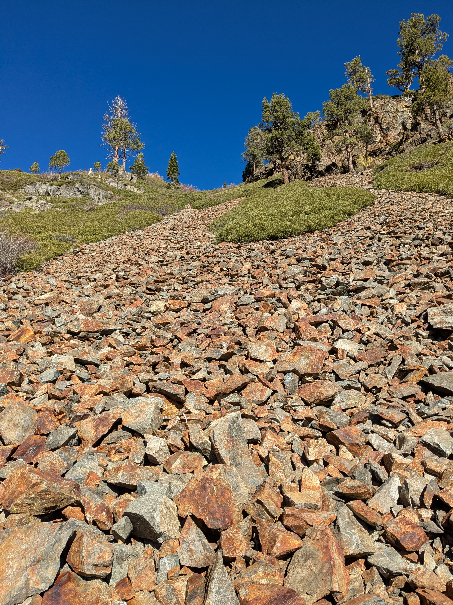
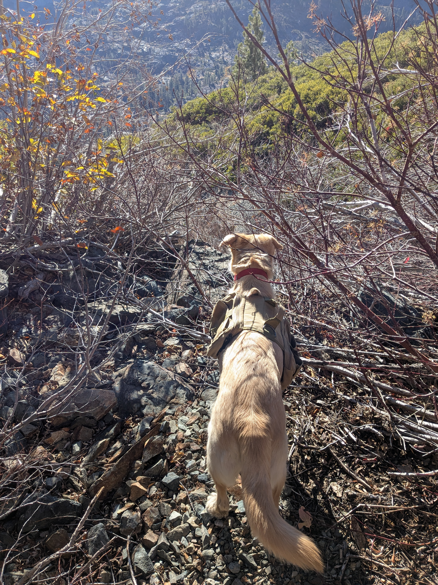

I decided to take Cali on her first overnight backpacking trip for a late fall weekend in the Desolation Wilderness. I had been up Tallac once previously with my sister in 2021, and had been over the col into the Desolation area the year after during the winter. I had been itching to explore the area in the summer, as there is lots of peakbagging to be had, and some fun scrambling and rock routes. Permits can be tricky, however, and due to my lingering Morton’s neuroma I was scared to do anything more involved than Class 2. So, I waited out the end of the quota season and snagged an overnight permit.
We started from the Glen Alpine trailhead just after lunch and hit the trail, quickly working our way up the valley. We made it to Gilmore Lake, near which I had camped with my sister in 2022, and dropped my camping gear. We set of for Dick’s Peak, a few miles away. Dick’s is supposed to involve an increasingly difficult scramble and various trip reports describe varying difficulty of route finding, with significant penalties for getting off route. I was curious to see how well Cali would handle the scrambling.

We stayed on the PCT until the col between Dick’s Peak and Janine’s Peak. The traverse over to Dicks quickly became an exercise in rock hopping, which Cali took to immediately. Several snow patches were and endless source of entertainment. Over a false summit on the ridge, and the real scrambling began. Cali held her own, but we quickly came across a cruxy section at 9500 feet. The scramble did not look too bad, but it is clearly not a good place for a dog. It is blocky, but the ground is very loose. For a human, it is some big steps and reachy scrambling, but for a dog it is insanely steep and loose. Cali tried a few approaches, but was clearly scared and unhappy, so we retreated back to camp.

The night was colder than I had expected, and while I brought a mat for Cali, she seemed to be cold, and so I ended up sharing the sleeping bag with her. The next morning I packed camp up and we set off to summit Mount Tallac, which I knew she was capable of. 15 minutes into the ascent, she saw a deer and took off. I lost her for about 10 minutes, whistling for her. Just as I was about to give up on finding her, she reemerged, wildly happy. Asshole.

She earned herself a leash the rest of the way up Tallac, and we snapped a selfie. The south end of Lake Tahoe was splayed out below, and the signature of a wind vortex was clearly visible in the water. This type of phenomenon can have several different causes, but the vorticity can likely be attributable to the dynamically "tall" mountains forcing the wind along Highway 50 to bend around the Desoluation Wilderness.

There is a more direct trail coming off of Tallac that meets up with the trail that ascends from Fallen Leaf Lake and continues, more or less directly, back to Glen Alpine. I had been on part of this trail on my previous ascent of Tallac and it seemed like a great option to cut off some distance while seeing new terrain on the way back. The trail was pretty good, and we made good time for about 2 miles heading down from the summit. The gradual backside of Tallac eventually gives way to a steep slope that cuts down to the Glen Alpine creek, losing 1400 feet in a downward traversing mile.
400 vertical feet into this traverse, the trail was interrupted by a rock slide. A severely steep rock feature above and level with the trail looked to be impassable, but there appeared to be a loose trail descending down the slide, presumably bypassing the washout and re-ascending on the other side of the cliff band. I started down, and Cali thundered after me, knocking rocks loose. I tried to call her back to me, but she could not re-ascend the loose rock. Keeping her on a leash, I slowly picked the least loose option, finally making it into a gully with a small creek. I poked around, looking for the bypass track that would lead us back up to the trail, but there was none to be found. The terrain above was extremely loose talus, with cliff bands above that. We would need to continue down the gulley.


The scrambling was not terrible for me, but Cali needed help in several places. The gulley was not as steep on the right, and I knew that the topo looked to be relatively friendly for the half mile or so back to our ascent trail, so I made an attempt to climb out of the gulley. It was loose scree, and Cali adamantly refused to climb up to me. I considered trying to carry her, but the fall potential was pretty bad, so back down we went. There were a few tricky boulder moves in the gulley that I needed to drag Cali down and catch her, which was no fun for anyone involved. Finally, the gulley cliffed out completely and there was no viable descent. The steeper left side was covered in low shrubs. Faced with no other choice, I made my way up to the start of the shrubs, called Cali over, picked her up, and tossed her into the brush. Her feet couldn’t reach the ground through the branches, so she was totally stuck, but at least relatively safe. We painstakingly made our way up the hill this way. For short stretches, I got her over my shoulders and managed a few staggering paces before I would collapse into an unseen hole in the terrain. Once out of the gully, the brush continued; extremely annoying, but no longer threatening. By this time, my phone was completely dead. We slowly made out way down the gentler slope to the main trail, and then walked out.
